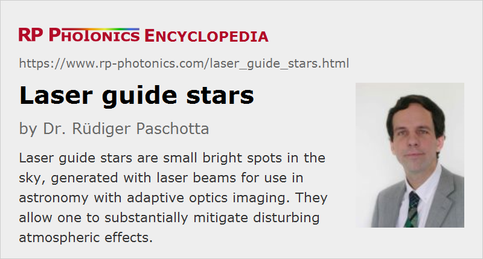

Laser Guide Stars
Definition: small bright spots in the sky, generated with laser beams for use in astronomy with adaptive optics imaging
Alternative terms: artificial guide stars, sodium guide stars, laser beacons
How to cite the article; suggest additional literature
Author: Dr. Rüdiger Paschotta
The quality and size of modern astronomical telescopes have been enormously increased; telescopes with mirror diameters of several meters and very high surface quality are used in many observatories. The image resolution of the best and largest of these telescopes is already no longer limited by the optics themselves, but by atmospheric distortions: the light from astronomical objects can travel over huge distances in space without significant distortions, but temperature and pressure variations associated with turbulences in the Earth's atmosphere can lead to significant distortions, even at favorable locations on mountains with a clear sky.
A straightforward solution to this problem is to use space-based telescopes. However, these cannot be as large as terrestrial telescopes, and are very expensive to build, launch, operate, and maintain. Therefore, the alternative solution of atmospheric correction is being increasingly adopted, which makes it possible to reduce strongly the effect of atmospheric distortions for Earth-based telescopes: the wavefront distortions caused by the atmosphere are compensated for with adaptive optics, based on e.g. deformable mirrors with many degrees of freedom. Such a system obviously requires exact information on the current atmospheric distortions. These can be measured by analyzing the wavefronts from a distance point-like object such as a star (called guide star), since without distortions this light would have essentially plane wavefronts.
For precise wavefront correction, the guide star has to be close (in terms of direction) to the object under investigation, and has to be sufficiently bright. Unfortunately, however, one cannot always find a suitable natural guide star. In this situation, an artificial guide star (or laser beacon), temporarily created by shining an intense laser beam into the atmosphere, can replace a natural star. Some laser light is then coming back to the telescope and can be analyzed e.g. with a Shack–Hartmann wavefront sensor. An improved scheme may even use multiple laser guide stars.
The position of the artificial guide star may drift somewhat, but this can be corrected e.g. by comparing it with that of a natural star, which does not have to be particularly bright.
Types of Laser Guide Stars
The two dominant types of laser guide stars are the sodium beacon and the Rayleigh beacon. The principle of the sodium guide star is to tune the wavelength of the laser radiation to a resonance of sodium atoms at 589.2 nm. This causes sodium atoms, naturally occurring in the mesosphere at an altitude of around 90 km, to absorb laser light and subsequently to emit fluorescence at the same wavelength. This approach has the nice feature of obtaining fluorescence light essentially only from a narrow range of high altitudes. Its disadvantage is that the required orange/yellow laser source with a power of e.g. 10 W or even 50 W and a small linewidth is not easy to construct and accordingly expensive. Available technological options for sodium beacons include
- a Raman laser based on a bulk crystal, pumped with a frequency-doubled Q-switched neodymium-based solid-state laser
- an 1178-nm Raman fiber laser (or Raman MOPA), pumped with an ytterbium-doped fiber laser, with subsequent frequency doubling e.g. in periodically poled KTP
- sources based on sum frequency mixing of two laser sources (continuous-wave or pulsed), e.g. at 1064 and 1319 nm, or at 938 and 1583 nm
- a pulsed dye laser, which may be made as a “modeless laser” (superluminescent source) for effectively exciting sodium ions with different longitudinal velocities [6].
In contrast, a Rayleigh guide star is based on Rayleigh scattering in the lower atmosphere. In order to use only the scattered light from the higher parts of the atmosphere (at roughly 30 km height), one uses a pulsed laser together with time-gating detection in the wavefront sensor. As the Rayleigh beacon is not based on a narrowband resonance, the chosen wavelength is not critical, except that it should be short because Rayleigh scattering is most efficient at short wavelengths. A common choice is that of a green laser source, such as a frequency-doubled solid-state laser, but a copper vapor laser (→ gas lasers) or an excimer laser can also be used. Such laser sources can be less complex than those of sodium guide stars, and at the same time more powerful, but the lower altitude of the backscattered light compromises the quality of the wavefront correction.
In many cases, laser guide star sources emit nanosecond pulses, rather than continuously. The pulsed format simplifies the nonlinear frequency conversion in the laser source, and it makes possible time-gated detection.
Laser Guide Star Systems in Use or in Development
Although a number of different laser sources for laser beacons have been demonstrated, only a few observatories appear to be using laser guide stars so far: the Lick Observatory of the University of California, the Palomar Observatory of Caltech, and the Keck Observatory in Hawaii, all using sodium beacons. There is also the William Herschel Telescope of the Isaac Newton Group in La Palma, Canary Islands, using a Rayleigh guide star. Several other large observatories are currently developing laser guide stars and adaptive optics systems of various types. Examples are the Very Large Telescope of ESO, Gemini North, and the Multiple Mirror Observatory (MMTO) in Arizona.
Suppliers
The RP Photonics Buyer's Guide contains 4 suppliers for laser guide stars. Among them:
Questions and Comments from Users
Here you can submit questions and comments. As far as they get accepted by the author, they will appear above this paragraph together with the author’s answer. The author will decide on acceptance based on certain criteria. Essentially, the issue must be of sufficiently broad interest.
Please do not enter personal data here; we would otherwise delete it soon. (See also our privacy declaration.) If you wish to receive personal feedback or consultancy from the author, please contact him e.g. via e-mail.
By submitting the information, you give your consent to the potential publication of your inputs on our website according to our rules. (If you later retract your consent, we will delete those inputs.) As your inputs are first reviewed by the author, they may be published with some delay.
Bibliography
| [1] | L. A. Thompson and C. S. Gardner, “Experiments on laser guide stars at Mauna Kea Observatory for adaptive imaging in astronomy”, Nature 328, 229 (1987), doi:10.1038/328229a0 |
| [2] | B. M. Welsh and C. S. Gardner, “Nonlinear resonant absorption effects on the design of resonance fluorescence lidars and laser guide stars”, Appl. Opt. 28 (19), 4141 (1989), doi:10.1364/AO.28.004141 |
| [3] | M. P. Jelonek et al., “Characterization of artificial guide stars generated in the mesospheric sodium layer with a sum-frequency laser”, J. Opt. Soc. Am. A 11 (2), 806 (1994), doi:10.1364/JOSAA.11.000806 |
| [4] | K. Avicola et al., “Sodium-layer laser-guide-star experimental results”, J. Opt. Soc. Am. A 11 (2), 825 (1994), doi:10.1364/JOSAA.11.000825 |
| [5] | C. E. Max et al., “Design, layout, and early results of a feasibility experiment for sodium-layer laser-guide-star adaptive optics”, J. Opt. Soc. Am. A 11 (2), 813 (1994), doi:10.1364/JOSAA.11.000813 |
| [6] | J.-P. Pique and S. Farinotti, “Efficient modeless laser for a mesospheric sodium laser guide star”, J. Opt. Soc. Am. B 20 (10), 2093 (2003), doi:10.1364/JOSAB.20.002093 |
| [7] | J. C. Bienfang et al., “20 W of continuous-wave sodium D2 resonance radiation from sum-frequency generation with injection-locked lasers”, Opt. Lett. 28 (22), 2219 (2003) doi:10.1364/OL.28.002219 |
| [8] | F. Marc et al., “Effects of laser beam propagation and saturation on the spatial shape of sodium laser guide stars”, Opt. Express 17 (7), 4920 (2009), doi:10.1364/OE.17.004920 |
| [9] | T. J. Kane et al., “Laser remote magnetometry using mesospheric sodium”, J. Geophys. Res.: Space Physics 123 (8), 6171 (2018), doi:10.1029/2018JA025178 |
| [10] | Y. Lu et al., “208 W all-solid-state sodium guide star laser operated at modulated-longitudinal mode”, Opt. Express 27 (15), 20282 (2019), doi:10.1364/OE.27.020282 |
| [11] | X. Yang et al., “Diamond sodium guide star laser”, Opt. Lett. 45 (7), 1898 (2020), doi:10.1364/OL.387879 |
| [12] | P. Ma et al., “Kilowatt-level ytterbium-Raman fiber amplifier with a narrow-linewidth and near-diffraction-limited beam quality”, Opt. Lett. 45 (7), 1974 (2020), doi:10.1364/OL.387151 |
| [13] | Keck Observatory in Hawaii, http://www.keckobservatory.org/ |
| [14] | Lick Observatory of the University of California, http://mthamilton.ucolick.org/ |
| [15] | Palomar Observatory of Caltech, http://www.astro.caltech.edu/palomar/ |
| [16] | Isaac Newton Group of Telescopes of La Palma, http://www.ing.iac.es/ |
See also: laser applications, Raman lasers, solid-state lasers, fiber lasers, nonlinear frequency conversion, telescopes
and other articles in the category methods
|  |
If you like this page, please share the link with your friends and colleagues, e.g. via social media:
These sharing buttons are implemented in a privacy-friendly way!